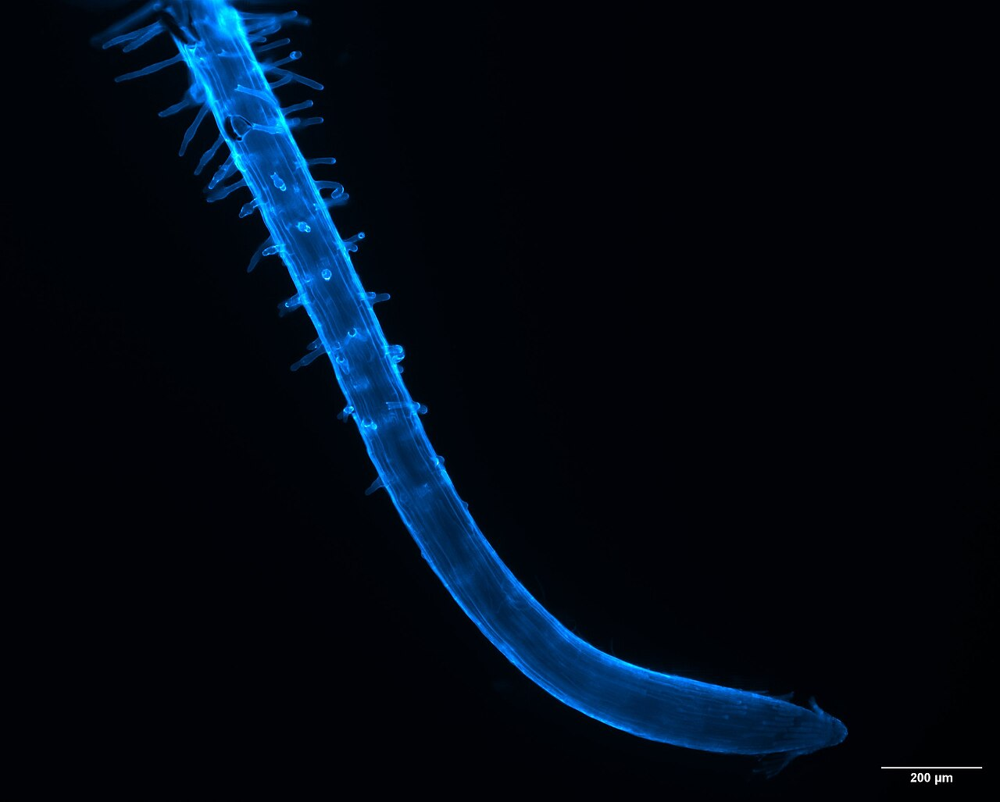
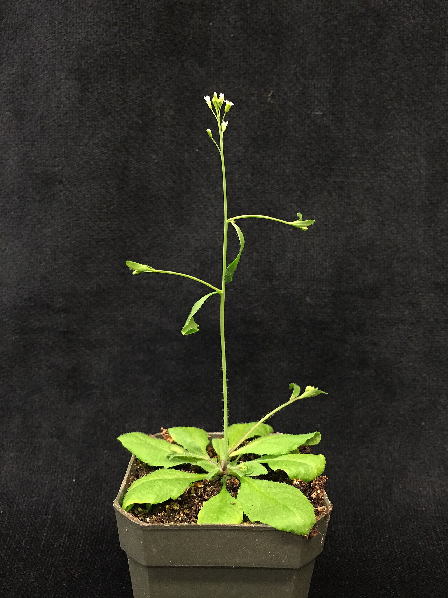

Plants can carry measurable reporter systems
Transgenic phytosensors, fluorescent reporters, autoluminescent plants, and plant nanobionic sensors demonstrate several ways to turn exposure or signaling into an optical output [1–4,6].
idea 01 · glowing plants
Could a contained plant reporter provide an inexpensive screening layer that identifies where confirmatory soil sampling should happen next?
real reference images
Before my circuit sketch, these are the two real scales the idea has to connect: a whole Arabidopsis plant and the root surface where soil exposure would be sensed.


where the idea stands
The useful question is not whether plants can report signals - they can. The proof problem is whether one selected contaminant can generate a repeatable, specific output in realistic soil without confusing ordinary plant stress for pollution.
Transgenic phytosensors, fluorescent reporters, autoluminescent plants, and plant nanobionic sensors demonstrate several ways to turn exposure or signaling into an optical output [1–4,6].
The proposal combines a contaminant-responsive regulatory element, a tissue-aware gate, and standardized imaging in a removable non-food plant module.
Soil pH, moisture, organic matter, plant age, other stresses, transgene silencing, and mixed pollutants could all weaken or imitate the intended signal.
One analyte and one chassis must outperform clean, drought, salt, nutrient, heat, pathogen, and mixed-soil controls before any contained field pilot is justified.
how I imagine it working
The first version deliberately narrows the problem: one pre-selected analyte class, one non-food model plant, and one calibrated output channel.
The proposal should begin with a contaminant that has a plausible responsive promoter or transcription-factor pathway. “General pollution” is not a valid target because general stress would produce unusable ambiguity [1,5,6].
Luciferase, fluorescence, pigment, or autoluminescence should be compared for background expression, response time, tissue penetration, energy burden, and compatibility with inexpensive imaging [2,3].
A useful circuit should reject signals that appear in the wrong tissue, without the expected timing, or under non-target stress. A second marker or logical gate is proposed to reduce false positives.
Fixed exposure, calibration references, matched control plants, and repeated imaging would convert brightness into a relative warning map. A positive plant signal would direct laboratory sampling - not declare a site safe or unsafe.
numbers before excitement
These are proposed go/no-go thresholds for an early controlled study, not measured results. They should be revised with a domain expert before experimental use.
| Measure | Minimum signal for continued development | Stop or redesign condition |
|---|---|---|
| Target response | At least a threefold median reporter increase over matched clean-soil controls after normalization for plant size. | Target exposure cannot be distinguished from controls across repeated batches. |
| Dose ordering | Monotonic response across at least five pre-registered bioavailable concentrations. | Signal direction changes unpredictably or saturates below the useful range. |
| Specificity | No more than 10% positive classifications across the combined non-target stress panel. | Drought, salinity, heat, nutrient stress, or pathogens regularly reproduce the target signal. |
| Repeatability | Within-condition coefficient of variation at or below 25% across independent growth batches. | Plant-to-plant variation overwhelms the exposure effect. |
| Confirmation | Blinded reporter classification agrees with an independent chemical assay in at least 90% of test samples. | The plant map does not improve sampling decisions above a pre-registered baseline. |
| Containment | No viable seed, pollen, or plant material detected outside the removable test module. | Containment cannot be demonstrated under the intended handling conditions. |
ways this could go badly
Containment, false-positive control, and independent confirmation are system requirements rather than optional later additions.
Use contained model or ornamental plants, sterile lines where possible, and removable modules rather than direct release into farmland.
The plant reports what it experiences. It cannot reconstruct total contamination or replace analytical chemistry [4,5].
Lock exposure settings, time of day, geometry, reference targets, plant age, and control placement before comparing brightness.
Collect seeds, pollen, plant waste, and growth medium; monitor trait stability and define a kill-or-remove process before deployment.
how I'd test it
Progression stops whenever a specificity, stability, containment, or confirmation gate fails.
Choose one analyte, one chassis, and candidate regulatory elements. Define clean and non-target controls before construction.
Compare brightness, background, timing, metabolic burden, and tissue localization under controlled expression.
Measure blinded dose-response curves across known concentrations and independent biological replicates.
Apply drought, salt, heat, nutrient, pathogen, mechanical, and mixed-stress controls.
Vary pH, moisture, organic matter, clay content, and contaminant mixtures while comparing chemical bioavailability.
Only after earlier gates pass, test removable modules with standardized imaging and confirm every classification chemically.
stuff I read
These papers support separate mechanisms and measurement approaches. None of them proves that my full BioLume Sentinel idea works.
visual note: the mechanism diagram is my own HTML/CSS sketch. the two photos are real reference images; full credits and licenses are listed above and in IMAGE_CREDITS.md.